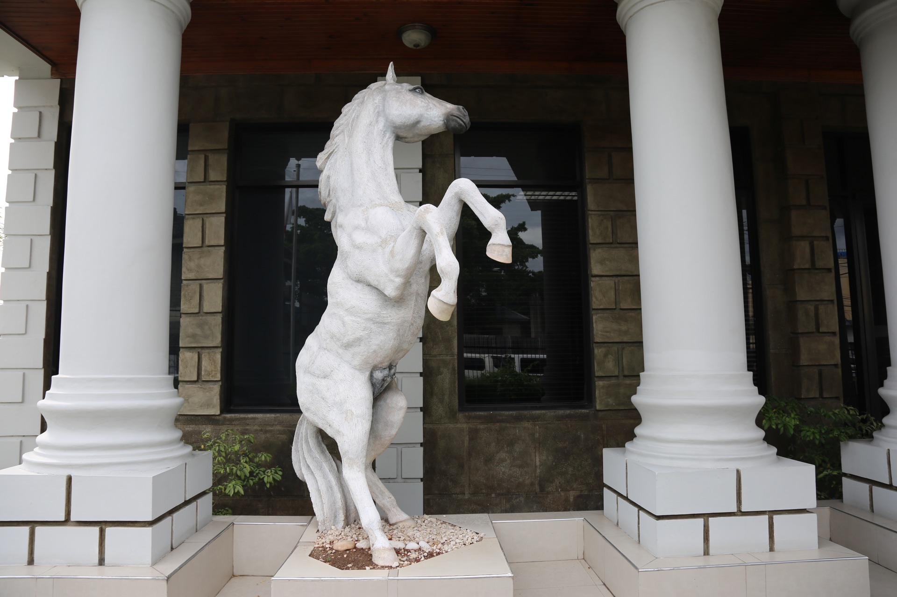
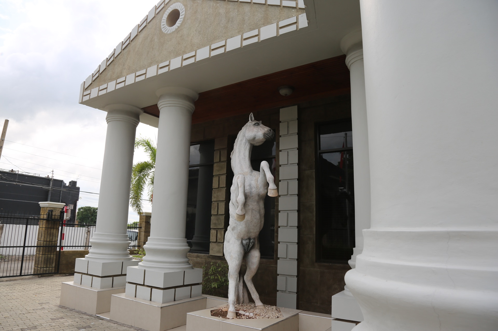

St Andrew · Jamaica · 2018
First Union
Horse Sculptures.
Life-size figurative sculpture

The project
Strength.
In sculptural form.
Two life-size rearing horses created for First Union Financial Group’s head office on Eastwood Park Road. Contemporary reporting identifies Scheed Cole as their creator and describes the pair as a symbol of the company’s strength.

